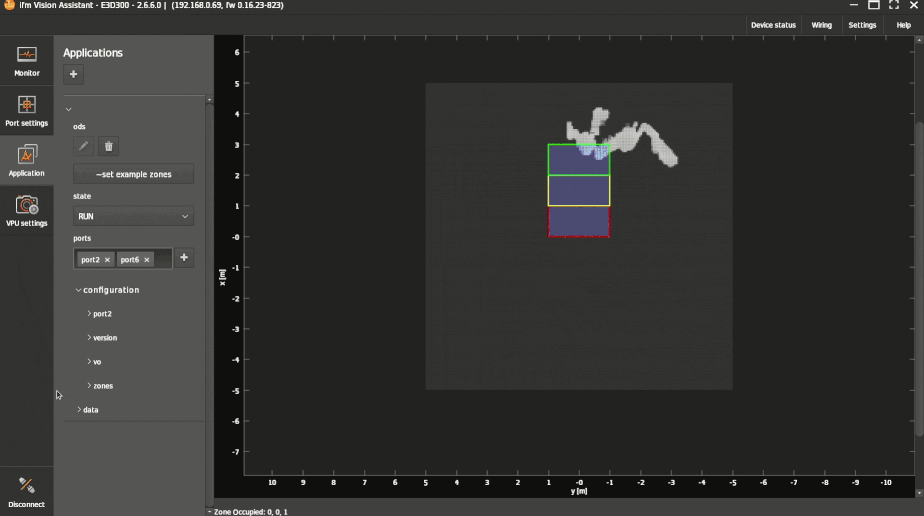
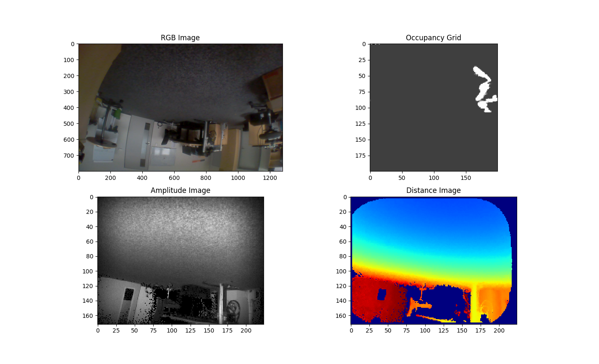

ODS data recording strategies
The following document shall give an overview of why, when, how and what kind of ODS data to record.
Why record
During different phases of the integration/development process, it is necessary to check and verify the ODS and/or O3R capabilities. To do so, the system must be tested with different goals in mind: objects to detect, stability, performance, etc. During all testing phases, issues could appear. To improve and verify the system, these issues (or lack of) need to be documented and recorded. This is the reason for the data recording.
What to record
All appearing issues, misbehavior or the lack of issues for certain situations are interesting to record. E.g.:
Wrongly detected objects (e.g. wrong distance)
Not detected objects
False positives (e.g. dust)
In general, everything which is not as expected, should be recorded.
Recording types
The O3R (ODS system) has two different recording data types: “normal” and “algo-debug”.
Normal
These are all non algo-debug data. E.g.:
3D data
Amplitude
Diagnosis
Temperature
These are possible to receive from a customer perspective and could be used for customer specific software. These are (nearly) the same data streams the ifm applications uses. However, these data are not usable for the ifm to improve or verify the ifm applications, filters, etc.
AlgoDebug
“AlgoDebug” records all necessary data for ifm to re-simulate the event as it occured during live operation. This includes the “normal” ifm data streams, e.g amplitude data, distance data, occupancy grid data, etc., and additional information from applications which might be protected because they are considered the intellectual property of ifm. This data is used to replay scenarios and reevaluate algorithmic approaches. Without this data, no feedback can be provided.
The regular ifm data streams inside an ifm Algo Debug dataset can be access by anyone without needing specific tools, i.e. the same way as a regular non-Algo Debug dataset.
When to record
Recording data - and especially algo debug data - can grow rapidly in size and therefore in memory. E.g.: Two heads and an ODS application running, might lead to 450 MB within 10 sec. Having several GB of algo debug data is not untypical during several testing phases. Try to avoid unnecessary data. E.g.:
Do not record data, if other issues are still active. E.g.: Active diagnosis errors (Overtemperature, wrong calibration, etc.)
Do not record several times the same artifact, if new data wouldn’t show any new information.
Seeing the misbehavior in one recording is proof enough
Do not record several minutes - some seconds before and after the misbehavior is enough. E.g. 5 sec. before and after.
If reproducible, try to start the recording with an stillstanding AGV and start driving after some waiting time (~1-2- sec.)
Clear naming and additional information to the recordings will help analyze the data. E.g.:
Stating the issue and what was expected
Clarify the ambient environment (sunlight, dust, temperature, etc.)
Explain how the misbehavior can be reproduced
Tell how often the issue is appearing
If the issue is not reproducible, more recordings might be beneficial
In general: Unexpected behavior should be recorded. Data is good, more data of the same doesn’t help. However, if in doubt: more data is better than no data.
Recording events
There might be several events where automatic recording is beneficial. These could be:
O3R diagnosis errors get activated
Customer software errors (exceptions, etc.)
Differences of object detection: ODS detects an object, but the LIDAR doesn’t or vice versa
It might be beneficial to establish some kind of “black box” functionality. Record the events within a ring buffer, which might be deleted either through a reboot or a person. This could be especially helpful for end-customers who encounter issues. The recorded data might be hold in RAM and forwarded via different ways (WiFi, etc.) to specific locations. This must however be established by the customer.
An typical event and recording approach might look like this:
flowchart LR
A[AGV start] --> B[ring buffer recording]
A --> C[driving]
C --> D{obstacle detected}
B --> E{Recording event?}
D -- yes --> E
D -- no --x C
E -- yes --o F[Save data]
E -- no --x B
How to record
Recording format
There is no standardized data stream format. However, is quite common to save 3D data as hdf5 data files. For this purposes ifm provides two separate recording formats:
Namely the ifm openly accessible data (the same as can be accessed via the API) - often called the ifm hdf5 format, and a closed raw data format - called ifm Algo Debug hdf5 format.
normal / open ifm hdf5 format
closed source / binary ifm Algo Debug format.
ifm Algo debug data is saved in a specific hdf5 format, see the section above.
To receive and save data in this specific hdf5 data format, ifm tool are provided.
ifmVisionAssistant
The ifm Vision Assistant is the go-to tool for receiving, saving, and replaying ifm O3R datasets. It is capable of recording both hdf5 formats.
Record and Replay
To record ODS data, navigate to the Monitor window and click on Recording on the bottom toolbar. After recording the data, you can replay it for debugging purposes.
While recording the data there are two Toggle Buttons beside the Start/Stop button.
Note
Record the Algo-Debug data when you need technical support from ifm to debug the scenario.

How to post-process the recorded data
iVA records data in Hierarchical Data Format (HDF) format where the information is stored in form of streams and multi-dimensional arrays. The following example uses the h5py python package to read the data.
The data analyzed below is recorded by an O3R225 camera head connected to a VPU device:
the 2D imager is connected to Port 0
the 3D imager is connected to Port 2
the IMU data is recorded at Port 6
one ODS application instance is running
Python snippet to read the data from a recording
import h5py
from matplotlib import pyplot as plt
file_name = 'test_ods.h5'
data = h5py.File(file_name, 'r')
print('Available streams in the recorded data : ',list(data["streams"]))
# Expecting a 2D imager and a 3D imager of a head is connected to VPU
stream_2d = data["streams"]['o3r_rgb_0']
stream_3d = data["streams"]['o3r_tof_0']
stream_ods = data["streams"]['o3r_app_ods_0']
# show all available data per stream
print(stream_2d.dtype)
# Retrieving first image per data stream
rgb_encoded = stream_2d[0]['jpeg']
rgb_decoded = cv2.imdecode(rgb_encoded,cv2.IMREAD_UNCHANGED)
rgb_image = cv2.cvtColor(rgb_decoded,cv2.COLOR_BGR2RGB)
distance_image = stream_3d[0]['distance']
amplitude_image = stream_3d[0]['amplitude']
occupancy_grid = stream_ods[0]['image']
plt.figure()
plt.subplot(2,2,1)
plt.imshow(rgb_image)
plt.title('RGB Image')
plt.subplot(2,2,2)
plt.imshow(occupancy_grid,cmap='gray',interpolation='none')
plt.title('Occupancy Grid')
plt.subplot(2,2,3)
plt.imshow(amplitude_image,cmap='gray',interpolation='none')
plt.title('Amplitude Image')
plt.subplot(2,2,4)
plt.imshow(distance_image,cmap='jet',interpolation='none')
plt.title('Distance Image')

Note
The Occupancy grid image is 200 x 200 px² image (1px == 50mm) rotated 90° clockwise with respect to the camera(s)’ orientation. The newest data in the robot forward direction is column on the right hand side of the occupancy grid.